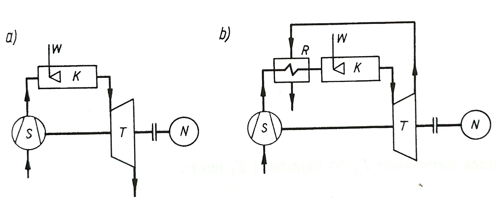
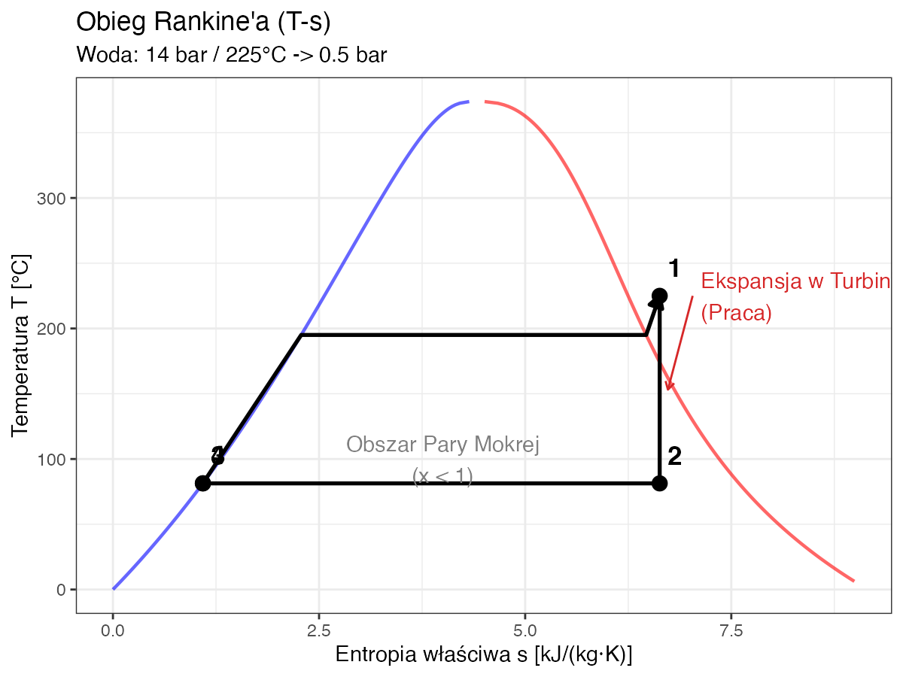

Ćwiczenie 4: Kogeneracja (Obieg Parowy)
🏭 Projekt: Etap 4 - Mikroturbina
W poprzednim zadaniu redukowaliśmy ciśnienie pary z 10 bar do 2 bar na zaworze dławiącym. To strata energii (egzergii)! Zamiast zaworu proponujemy zainstalować Turbinę Przeciwprężną.
Twoje Zadanie:
- Obliczyć teoretyczną (izentropową) pracę turbiny.
- Sprawdzić stan pary na wylocie (czy jest mokra?).
- Obliczyć moc elektryczną generatora.
Dane wejściowe:
- Wlot: \(p_1=10 \text{ bar}, t_1=250^\circ C\).
- Wylot: \(p_2=2 \text{ bar}\).
- Strumień: \(\dot{m}=2 \text{ t/h}\).

📈 Wizualizacja Obiegu (Wykres T-s)
Proces w turbinie (1 \(\to\) 2) to (w przybliżeniu) pionowa linia w dół (izentropa).
Para sucha (Punkt 1) wchodzi do turbiny i opuszcza ją jako lekko mokra lub sucha nasycona (Punkt 2).
🌀 Zadanie 4.1: Ekspansja Izentropowa (\(s=const\))
Proces w idealnej turbinie jest adiabatyczny odwracalny (\(s_1 = s_2\)).
Krok 1: Parametry na Wlocie (10 bar, 250°C)
Z tablic pary przegrzanej:
- \(h_1 = 2943 \text{ kJ/kg}\)
- \(s_1 = 6.926 \text{ kJ/kgK}\)
Krok 2: Parametry na Wylocie (2 bar, s = 6.926)
Sprawdzamy stan nasycenia dla 2 bar:
- \(s' = 1.530\) (ciecz)
- \(s'' = 7.127\) (para nasycona)
Note
Ponieważ \(s' < s_2 < s''\) (\(1.530 < 6.926 < 7.127\)), para na wylocie jest Mokrą Parą Nasyconą (mieszanina cieczy i pary).
💧 Zadanie 4.2: Stopień Suchości (\(x_2\))
Jaka część pary skropliła się w turbinie?
\[ s_2 = s' + x_2 (s'' - s') \] \[ x_2 = \frac{s_2 - s'}{s'' - s'} \]
Obliczenia: \[ x_2 = \frac{6.926 - 1.530}{7.127 - 1.530} \] \[ x_2 = \frac{5.396}{5.597} \approx \mathbf{0.964} \]
Interpretacja: 96.4% to para sucha, a 3.6% to kropelki wody. To bezpieczny poziom wilgotności dla turbiny (zazwyczaj dopuszcza się \(x > 0.85-0.90\)).
⚡ Zadanie 4.3: Moc Turbiny
Obliczamy entalpię na wylocie (\(h_{2s}\)) dla procesu izentropowego: \[ h_{2s} = h' + x_2 (h'' - h') \]
Dla 2 bar: \(h' = 504.7\), \(h'' = 2706.7\).
\[ h_{2s} = 504.7 + 0.964 \cdot (2706.7 - 504.7) \] \[ h_{2s} \approx 504.7 + 2122.7 = \mathbf{2627.4 \text{ kJ/kg}} \]
Moc Teoretyczna (\(N_t\)):
\[ N_t = \dot{m} \cdot (h_1 - h_{2s}) \] \[ N_t = 0.556 \text{ kg/s} \cdot (2943 - 2627.4) \text{ kJ/kg} \] \[ N_t = 0.556 \cdot 315.6 \approx \mathbf{175.5 \text{ kW}} \]
🎯 Zadanie 4.4: Sprawność Izentropowa Turbiny
Rzeczywista turbina nie jest idealna. Przyjmijmy sprawność izentropową \(\eta_{is} = 0.80\).
Jaka jest rzeczywista entalpia na wylocie (\(h_{2r}\))?
\[ \eta_{is} = \frac{h_1 - h_{2r}}{h_1 - h_{2s}} \]
\[ h_{2r} = h_1 - \eta_{is} \cdot (h_1 - h_{2s}) \]
\[ h_{2r} = 2943 - 0.80 \cdot (2943 - 2627.4) = \newline 2943 - 252.5 \]
\[ h_{2r} \approx \mathbf{2690.5 \text{ kJ/kg}} \]
Rzeczywista moc: \[ N_{r} = \dot{m} \cdot (h_1 - h_{2r}) = \newline 0.556 \cdot 252.5 \approx \mathbf{140.4 \text{ kW}} \]
(Zamiast \(175.5\) kW w idealnym przypadku — strata \(35\) kW).
Note
Stan pary na wylocie: Czy \(h_{2r} = 2690.5\) to nadal para mokra? \(h'' (2 bar) = 2706.7 > 2690.5\) → Tak, ale \(x_{2r} \approx 0.99\)! Praktycznie sucha.
🔧 Zadanie 4.5: Analiza Wariantowa – Wyższe Ciśnienie
Co jeśli kocioł dostarczy parę \(15 \text{ bar}, 300^\circ C\) zamiast \(10 \text{ bar}, 250^\circ C\)? Wylot nadal \(2 \text{ bar}\).
Dane z tablic (15 bar, 300°C)
\(h_1 = 3038\) kJ/kg, \(s_1 = 6.918\) kJ/kgK
Krok 1: Sprawdzamy stan na wylocie (\(s_2 = 6.918\), \(p_2 = 2\) bar). \(s'' (2 bar) = 7.127\) → \(s_2 < s''\) → Para mokra.
\[ x_2 = \frac{6.918 - 1.530}{7.127 - 1.530} = \frac{5.388}{5.597} \approx 0.963 \]
\[ h_{2s} = 504.7 + 0.963 \cdot 2202 = 504.7 + 2120.5 \approx 2625.2 \text{ kJ/kg} \]
Moc idealna: \[ N_t = 0.556 \cdot (3038 - 2625.2) = 0.556 \cdot 412.8 \approx \mathbf{229.5 \text{ kW}} \]
Wzrost ciśnienia i temperatury z (\(10\) bar, \(250^\circ C\)) na (\(15\) bar, \(300^\circ C\)) zwiększył moc o 31% (\(175.5 \rightarrow 229.5\) kW)!
📐 Zadanie 4.6: Sprawność Obiegu Carnota
Jaka byłaby maksymalna teoretyczna sprawność silnika cieplnego pracującego między temperaturą pary wlotowej a temperaturą otoczenia?
Wariant 1 (\(t_1 = 250^\circ C\)): \[ \eta_C = 1 - \frac{T_{zimne}}{T_{gorące}} \] \[ \eta_C = 1 - \frac{293}{523} \approx \mathbf{44\%} \]
Wariant 2 (\(t_1 = 300^\circ C\)): \[ \eta_C = 1 - \frac{293}{573} \approx \mathbf{49\%} \]
Warning
Nasza mikroturbina ma sprawność \(N_t/\dot{Q}_{kotła} = 175.5/1496 \approx 11.7\%\) — daleko od Carnota! To dlatego, że turbina jest przeciwprężna (nie skrapla pary do otoczenia, ale oddaje ją do wymiennika).
💰 Zadanie Domowe (Raport 4)
Temat: Opłacalność Kogeneracji.
Zainstalowanie turbiny kosztuje 150 000 PLN. Generator ma sprawność \(\eta_{gen} = 90\%\). Cena prądu dla przemysłu: 0.80 PLN/kWh. Turbina pracuje 4000 h/rok.
- Oblicz rzeczywistą moc elektryczną (\(N_{el} = N_t \cdot \eta_{gen}\)).
- Oblicz roczną produkcję energii [MWh].
- Oblicz roczny zysk [PLN].
- Oblicz czas zwrotu inwestycji (SPBT - Simple Payback Period).
Tip
Czy opłaca się montować turbinę? Porównaj z kosztem dławienia pary na zaworze (0 PLN zysku).

Termodynamika Techniczna - Ćwiczenia Projektowe